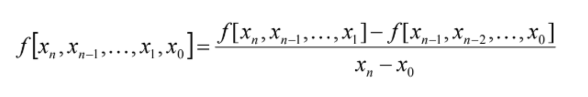
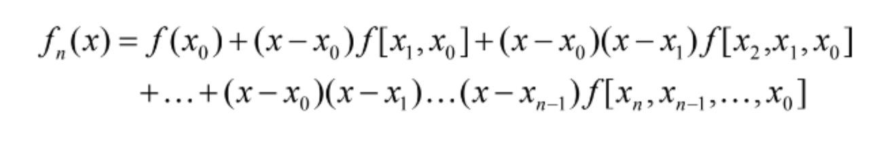

Acesse o Método de Newton e teste você mesmo.
Chamado de Método de Newton ou Método das Diferenças Divididas, é um recurso matemático para gerar um polinomio interpolado apartir de um conjunto de pontos
O método se baseia em realizar multiplas operações entre os pontos para encontrar a melhor curva para o conjunto de pontos.


function newtonMethod(x, y, n){
const tabela = [];
tabela.push(y.slice());
let aux = 1;
for (let i = 0; i < x.length - 1; i++) {
const ordem = [];
for (let j = 0; j < tabela[i].length - 1; j++) {
const dif_div = (tabela[i][j + 1] - tabela[i][j]) / (x[j + aux] - x[j]);
ordem.push(dif_div);
}
tabela.push(ordem);
aux += 1;
}
let polinomio = "";
for (let i = 0; i < tabela.length; i++) {
const fator = tabela[i][0];
if (i > 0) {
polinomio += " + ";
for (let j = 0; j < i; j++) {
polinomio += `(x - ${x[j].toFixed(2)}) *`;
}
}
polinomio += fator.toFixed(4);
}
return polinomio;
}